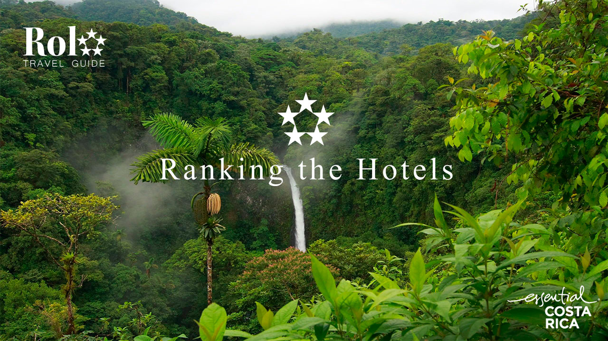
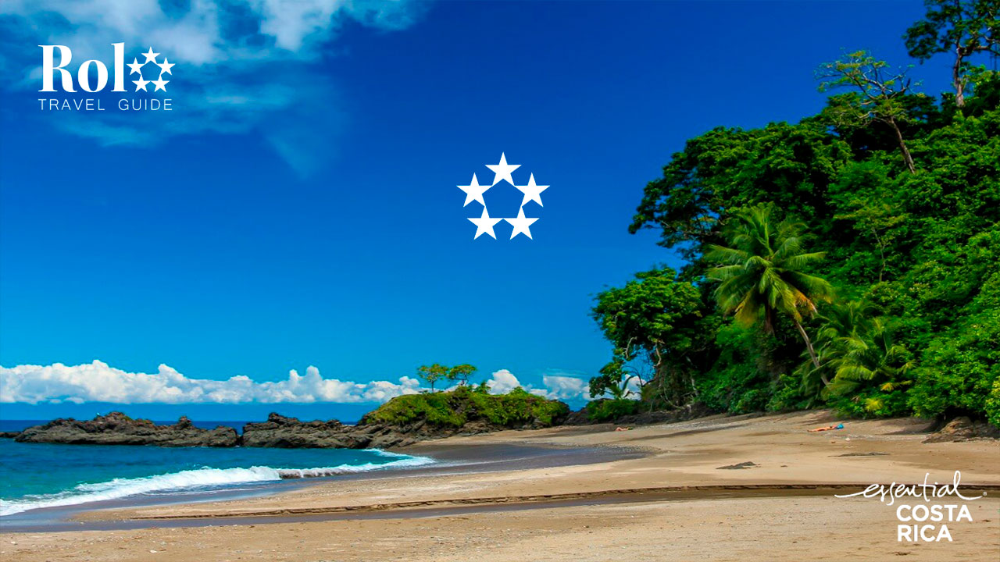
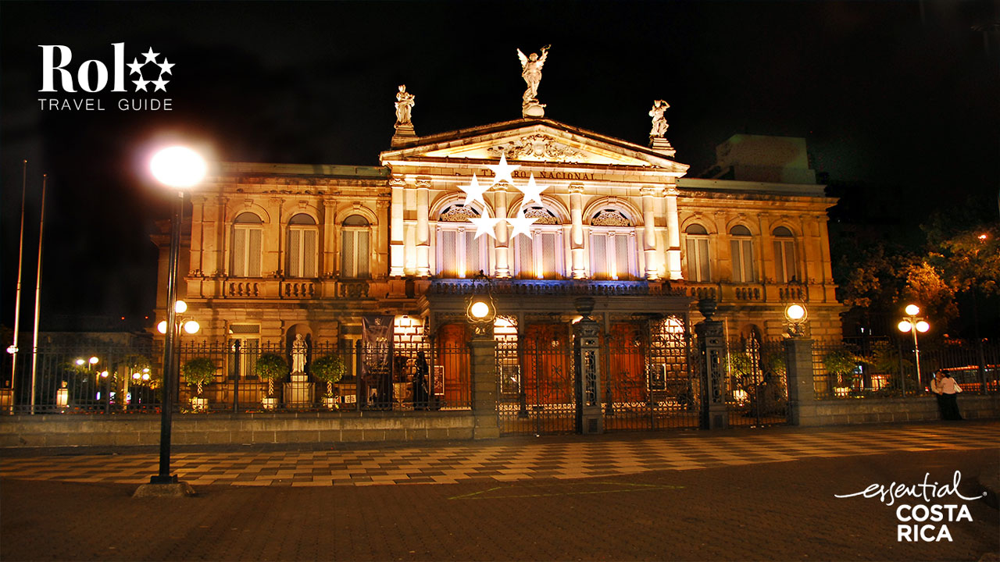

Nuestro Servicio
Está orientado a hoteles, ayudando a las empresas para hacer frente a dos grandes desafíos: mantener la lealtad de los clientes y mejorar su satisfacción

Un pais concentrado
Con una amplia riqueza natural, nuestro país satisface cualquier preferencia, desde aventuras, hasta la relajación. Hermosas playas, majestuosas montañas y volcanes, y exóticas selvas con gran diversidad de flora y fauna, son paisajes que permiten llamar a Costa Rica, un paraíso